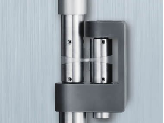

☰
MAGNETO-RHEOLOGY

The new MR Accessory enables the complete characterization of magneto-rheological fluids under the influence of a controlled field. Applied fields up to 1 T and a sample temperature range of -10 °C to 170 °C make the MR Accessory ideal for all studies of MR fluids and ferrofluids. The MR Accessory applies a controlled field through an integrated electro-magnetic coil located below the sample. This coil operates in conjunction with an upper yoke to deliver a homogeneous magnetic field that is normal to the plate surface. The system includes a channel to accommodate an optional Hall probe for real-time measurement and closed loop control of the sample field.